This page updates itself from our shared activity log. The Mitraja team adds a row, this page reflects it, no rebuild needed. Start with our most-loved week yet: Summer Camp 2026.
13–19 July 2026, Sidhabari. Organised through Apollo Club to bring back school dropouts and inactive members, mapped local leadership and resource people, and ran on community trust rather than outside funding.
participants, growing every day
years old, across generations
Sidhabari, Matia, Bakaitari, Uportola
funded by local, voluntary contribution
Facilitated by Subraato Dalu, a school teacher from the community. Participants explored creativity using naturally available materials, giving the Mitraja team a first read on imagination, confidence and creative interest across the group.
Warm-up exercises, nutrition, healthy food habits, dietary needs and basic hygiene, showing how locally available food already meets most nutritional needs.
Quizzes, book categories and library-based games turned the community library into a shared learning space, and surfaced real curiosity in the children who came.
Our biggest single-day turnout. Participants were introduced to the rich tradition of Goalparia pottery through hands-on clay work, and to pottery as a real, creative livelihood.
Local flora, medicinal plants, herbs and traditional plantation techniques, paired with reflection on community-based leadership and local ownership. This session is what sparked our plan to map medicinal plants in the local language.
Enthusiasm, unity, teamwork, and interaction across every age group. Sports proved to be one of the strongest mediums for community mobilisation all week.
Songs, prize distribution and celebration closed the week, recognising every participant's contribution and cementing community ownership of what had just been built together.
The Summer Camp was completed without external financial support. Small voluntary contributions from Mitraja members and the local community covered every expense. Local resource persons facilitated for free, and some even contributed money themselves.
This is one of our strongest learnings, and it will guide how we plan every future program: start with what a community already has (trust, volunteer effort, shared ownership) before reaching for outside funding.
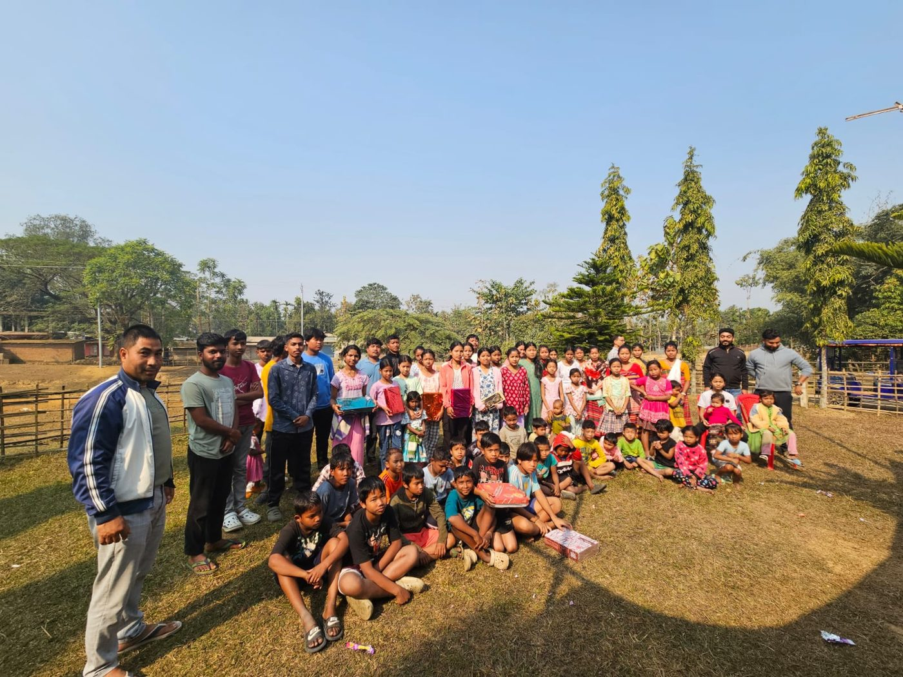
Community-funded, community-runWe keep our reflections visible on purpose. A foundation that only shows its wins isn't being honest about how community work actually gets built.
Real photographs pulled from Mitraja's own newsletter issues and brochure. We haven't matched every frame to its exact date and session yet, so treat these as a first look while we build out full captions.

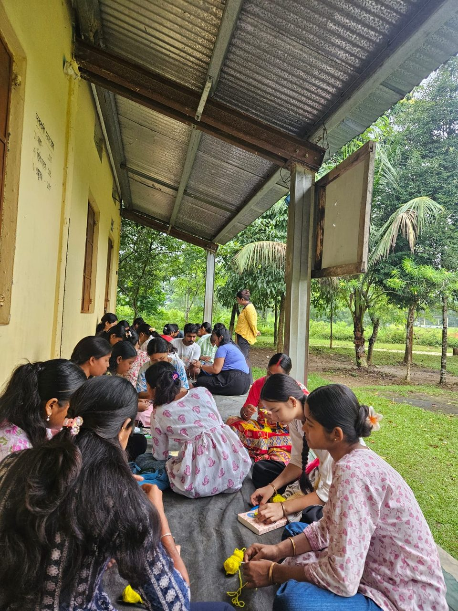
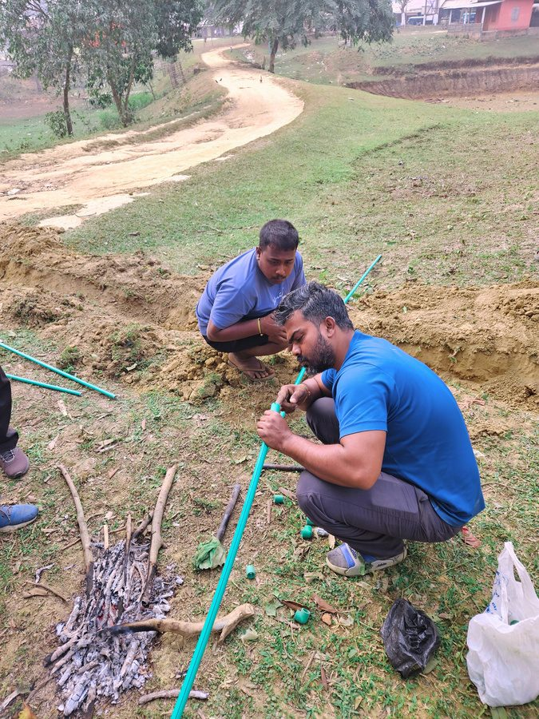


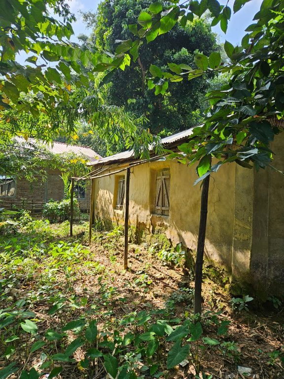
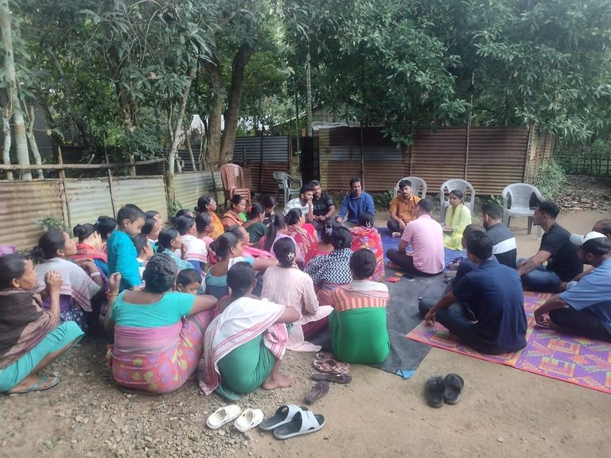
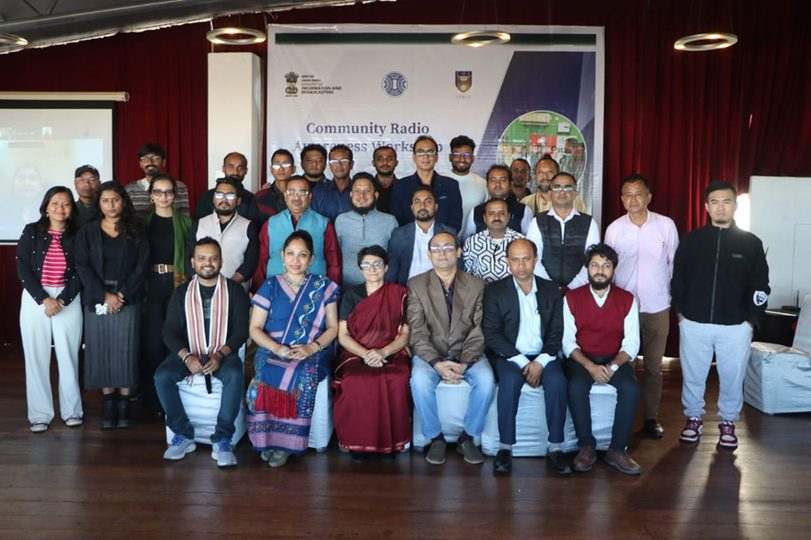
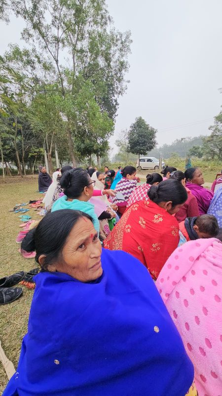
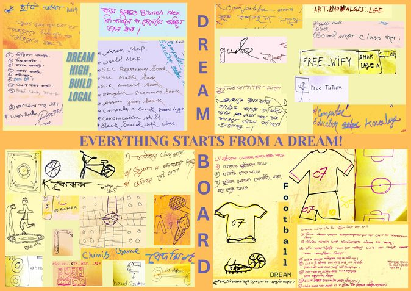
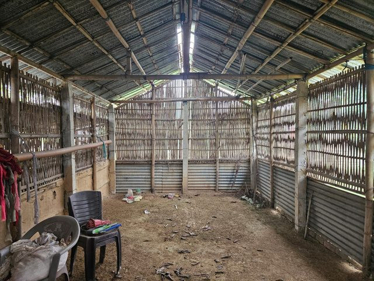
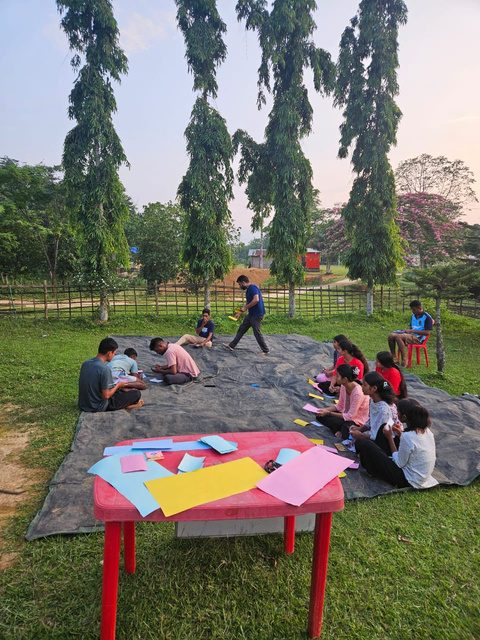
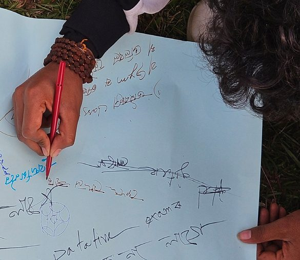
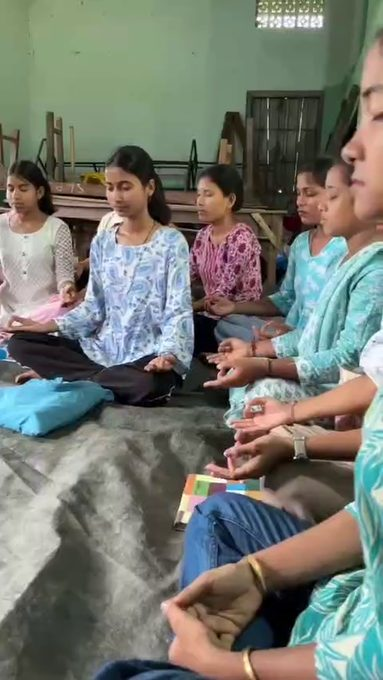
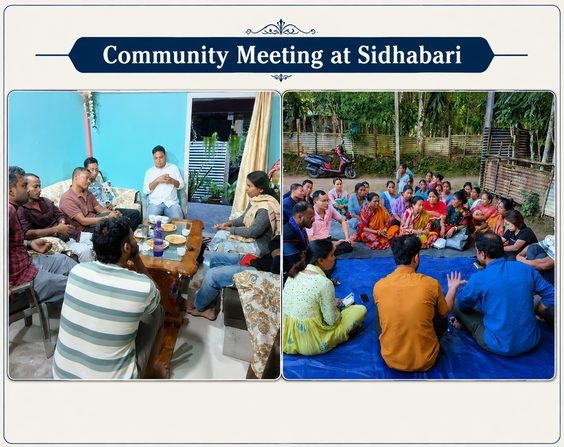

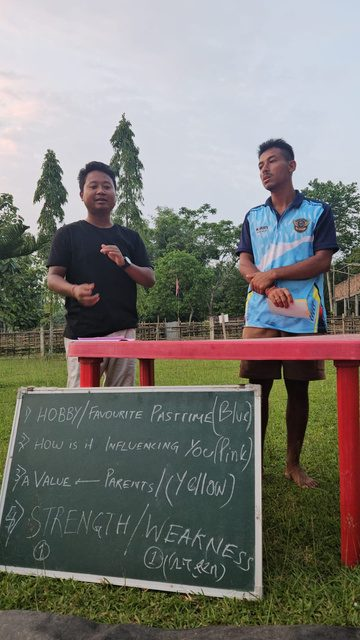
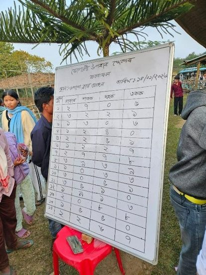